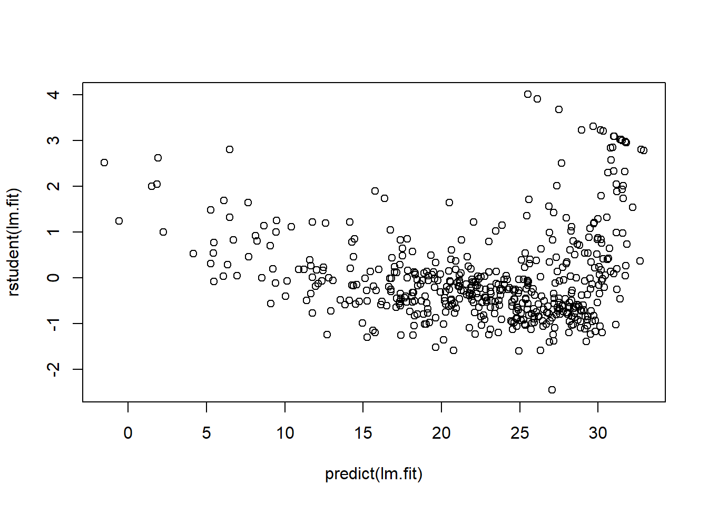
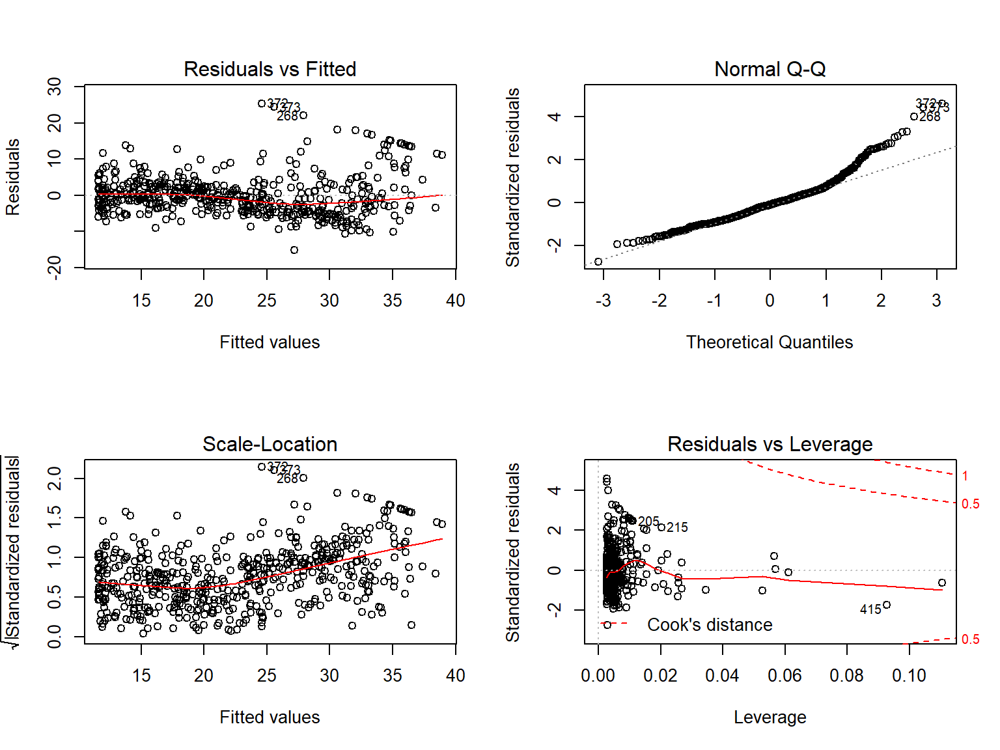

2.6 Lab: Linear Regression
2.6.1 Libraries
The library() function is used to load libraries, or groups of functions and data sets that are not included in the base R distribution.
Basic functions that perform least squares linear regression and other simple analyses come standard with the base distribution, but more exotic functions require additional libraries.
Here we load the MASS package, which is a very large collection of data sets and functions.
We also load the ISLR package, which includes the data sets associated with this book.
If you receive an error message when loading any of these libraries, it likely indicates that the corresponding library has not yet been installed on your system.
Some libraries, such as MASS, come with R and do not need to be separately installed on your computer.
However, other packages, such as ISLR, must be downloaded the first time they are used. This can be done directly from within R.
For example, on a Windows system, select the Install package option under the Packages tab.
After you select any mirror site, a list of available packages will appear.
Simply select the package you wish to install and R will automatically download the package.
Alternatively, this can be done at the R command line via install.packages("ISLR").
This installation only needs to be done the first time you use a package.
However, the library() function must be called each time you wish to use a given package.
2.6.2 Simple Linear Regression
The MASS library contains the Boston data set, which records medv (median house value) for 506 neighborhoods around Boston.
We will seek to predict medv using 13 predictors such as rm (average number of rooms per house), age (average age of houses), and lstat (percent of households with low socioeconomic status).
## [1] "crim" "zn" "indus" "chas" "nox" "rm" "age"
## [8] "dis" "rad" "tax" "ptratio" "black" "lstat" "medv"To find out more about the data set, we can type ?Boston.
We will start by using the lm() function to fit a simple linear regression model, with medv as the response and lstat as the predictor.
The basic syntax is lm(y∼x,data), where y is the response, x is the predictor, and data is the data set in which these two variables are kept.
## Error in eval(predvars, data, env): object 'medv' not foundThe command causes an error because R does not know where to find the variables medv and lstat. The next line tells R that the variables are
in Boston. If we attach Boston, the first line works fine because R now recognizes the variables.
If we type lm.fit, some basic information about the model is output.
For more detailed information, we use summary(lm.fit).
This gives us p-values and standard errors for the coefficients, as well as the \(R^2\) statistic and F-statistic for the model.
##
## Call:
## lm(formula = medv ~ lstat)
##
## Coefficients:
## (Intercept) lstat
## 34.55 -0.95##
## Call:
## lm(formula = medv ~ lstat)
##
## Residuals:
## Min 1Q Median 3Q Max
## -15.17 -3.99 -1.32 2.03 24.50
##
## Coefficients:
## Estimate Std. Error t value Pr(>|t|)
## (Intercept) 34.5538 0.5626 61.4 <0.0000000000000002 ***
## lstat -0.9500 0.0387 -24.5 <0.0000000000000002 ***
## ---
## Signif. codes: 0 '***' 0.001 '**' 0.01 '*' 0.05 '.' 0.1 ' ' 1
##
## Residual standard error: 6.22 on 504 degrees of freedom
## Multiple R-squared: 0.544, Adjusted R-squared: 0.543
## F-statistic: 602 on 1 and 504 DF, p-value: <0.0000000000000002We can use the names() function in order to find out what other pieces of information are stored in lm.fit.
Although we can extract these quantities by name—e.g. lm.fit$coefficients—it is safer to use the extractor functions like coef() to access them.
## [1] "coefficients" "residuals" "effects" "rank"
## [5] "fitted.values" "assign" "qr" "df.residual"
## [9] "xlevels" "call" "terms" "model"In order to obtain a confidence interval for the coefficient estimates, we can use the confint() command.
## 2.5 % 97.5 %
## (Intercept) 33.45 35.659
## lstat -1.03 -0.874The predict() function can be used to produce confidence intervals and prediction intervals for the prediction of medv for a given value of lstat.
## fit lwr upr
## 1 29.8 17.57 42.0
## 2 25.1 12.83 37.3
## 3 20.3 8.08 32.5For instance, the \(95\%\) confidence interval associated with a lstat value of 10 is \((24.47, 25.63)\), and the \(95\%\) prediction interval is \((12.828, 37.28)\).
As expected, the confidence and prediction intervals are centered around the same point (a predicted value of \(25.05\) for medv when lstat equals 10), but the latter are substantially wider.
We will now plot medv and lstat along with the least squares regression line using the plot() and abline() functions.

There is some evidence for non-linearity in the relationship between lstat and medv.
We will explore this issue later in this lab.
The abline() function can be used to draw any line, not just the least squares regression line.
To draw a line with intercept a and slope b, we type abline(a,b).
Below we experiment with some additional settings for plotting lines and points.
The lwd=3 command causes the width of the regression line to be increased by a factor of 3; this works for the plot() and lines() functions also.
We can also use the pch option to create different
plotting symbols.
abline(lm.fit, lwd=3)
abline(lm.fit, lwd=3, col="red")
plot(lstat, medv, col="red")
plot(lstat, medv, pch = 20)
plot(lstat, medv, pch = "+")
plot(1:20, 1:20, pch = 1:20)Next we examine some diagnostic plots, several of which were discussed in Section 3.3.3.
Four diagnostic plots are automatically produced by applying the plot() function directly to the output from lm().
In general, this command will produce one plot at a time, and hitting Enter will generate the next plot.
However, it is often convenient to view all four plots together.
We can achieve this by using the par() function, which tells R to split the display screen into separate panels so that multiple plots can be viewed simultaneously.
For example, par(mfrow=c(2,2)) divides the plotting region into a 2 × 2 grid of panels.
 Alternatively, we can compute the residuals from a linear regression fit using the
Alternatively, we can compute the residuals from a linear regression fit using the residuals() function.
The function rstudent() will return the studentized residuals, and we can use this function to plot the residuals against the fitted values.


On the basis of the residual plots, there is some evidence of non-linearity.
Leverage statistics can be computed for any number of predictors using the hatvalues() function.

## 375
## 375The which.max() function identifies the index of the largest element of a vector.
In this case, it tells us which observation has the largest leverage statistic.
2.6.3 Multiple Linear Regression
In order to fit a multiple linear regression model using least squares, we again use the lm() function.
The syntax lm(y∼x1+x2+x3) is used to fit a model with three predictors, x1, x2, and x3.
The summary() function now outputs the regression coefficients for all the predictors.
##
## Call:
## lm(formula = medv ~ lstat + age, data = Boston)
##
## Residuals:
## Min 1Q Median 3Q Max
## -15.98 -3.98 -1.28 1.97 23.16
##
## Coefficients:
## Estimate Std. Error t value Pr(>|t|)
## (Intercept) 33.2228 0.7308 45.46 <0.0000000000000002 ***
## lstat -1.0321 0.0482 -21.42 <0.0000000000000002 ***
## age 0.0345 0.0122 2.83 0.0049 **
## ---
## Signif. codes: 0 '***' 0.001 '**' 0.01 '*' 0.05 '.' 0.1 ' ' 1
##
## Residual standard error: 6.17 on 503 degrees of freedom
## Multiple R-squared: 0.551, Adjusted R-squared: 0.549
## F-statistic: 309 on 2 and 503 DF, p-value: <0.0000000000000002The Boston data set contains 13 variables, and so it would be cumbersome to have to type all of these in order to perform a regression using all of the predictors. Instead, we can use the following short-hand:
##
## Call:
## lm(formula = medv ~ ., data = Boston)
##
## Residuals:
## Min 1Q Median 3Q Max
## -15.594 -2.730 -0.518 1.777 26.199
##
## Coefficients:
## Estimate Std. Error t value Pr(>|t|)
## (Intercept) 36.459488 5.103459 7.14 0.0000000000033 ***
## crim -0.108011 0.032865 -3.29 0.00109 **
## zn 0.046420 0.013727 3.38 0.00078 ***
## indus 0.020559 0.061496 0.33 0.73829
## chas 2.686734 0.861580 3.12 0.00193 **
## nox -17.766611 3.819744 -4.65 0.0000042456438 ***
## rm 3.809865 0.417925 9.12 < 0.0000000000000002 ***
## age 0.000692 0.013210 0.05 0.95823
## dis -1.475567 0.199455 -7.40 0.0000000000006 ***
## rad 0.306049 0.066346 4.61 0.0000050705290 ***
## tax -0.012335 0.003761 -3.28 0.00111 **
## ptratio -0.952747 0.130827 -7.28 0.0000000000013 ***
## black 0.009312 0.002686 3.47 0.00057 ***
## lstat -0.524758 0.050715 -10.35 < 0.0000000000000002 ***
## ---
## Signif. codes: 0 '***' 0.001 '**' 0.01 '*' 0.05 '.' 0.1 ' ' 1
##
## Residual standard error: 4.75 on 492 degrees of freedom
## Multiple R-squared: 0.741, Adjusted R-squared: 0.734
## F-statistic: 108 on 13 and 492 DF, p-value: <0.0000000000000002We can access the individual components of a summary object by name (type ?summary.lm to see what is available).
Hence summary(lm.fit)$r.sq gives us the \(R^2\), and summary(lm.fit)$sigma gives us the RSE.
The vif() function, part of the car package, can be used to compute variance inflation factors.
Most VIF’s are low to moderate for this data.
The car package is not part of the base R installation so it must be downloaded the first time
you use it via the install.packages option in R.
## crim zn indus chas nox rm age dis rad tax
## 1.79 2.30 3.99 1.07 4.39 1.93 3.10 3.96 7.48 9.01
## ptratio black lstat
## 1.80 1.35 2.94What if we would like to perform a regression using all of the variables but one?
For example, in the above regression output, age has a high p-value.
So we may wish to run a regression excluding this predictor.
The following syntax results in a regression using all predictors except age.
##
## Call:
## lm(formula = medv ~ . - age, data = Boston)
##
## Residuals:
## Min 1Q Median 3Q Max
## -15.605 -2.731 -0.519 1.760 26.224
##
## Coefficients:
## Estimate Std. Error t value Pr(>|t|)
## (Intercept) 36.43693 5.08012 7.17 0.00000000000272 ***
## crim -0.10801 0.03283 -3.29 0.00107 **
## zn 0.04633 0.01361 3.40 0.00072 ***
## indus 0.02056 0.06143 0.33 0.73799
## chas 2.68903 0.85960 3.13 0.00186 **
## nox -17.71354 3.67931 -4.81 0.00000196711001 ***
## rm 3.81439 0.40848 9.34 < 0.0000000000000002 ***
## dis -1.47861 0.19061 -7.76 0.00000000000005 ***
## rad 0.30579 0.06609 4.63 0.00000475053897 ***
## tax -0.01233 0.00376 -3.28 0.00110 **
## ptratio -0.95221 0.13029 -7.31 0.00000000000110 ***
## black 0.00932 0.00268 3.48 0.00054 ***
## lstat -0.52385 0.04763 -11.00 < 0.0000000000000002 ***
## ---
## Signif. codes: 0 '***' 0.001 '**' 0.01 '*' 0.05 '.' 0.1 ' ' 1
##
## Residual standard error: 4.74 on 493 degrees of freedom
## Multiple R-squared: 0.741, Adjusted R-squared: 0.734
## F-statistic: 117 on 12 and 493 DF, p-value: <0.0000000000000002Alternatively, the update() function can be used.
2.6.4 Interaction Terms
It is easy to include interaction terms in a linear model using the lm() function.
The syntax lstat:black tells R to include an interaction term between lstat and black.
The syntax lstat*age simultaneously includes lstat, age, and the interaction term lstat\(\times\)age as predictors; it is a shorthand for lstat+age+lstat:age.
##
## Call:
## lm(formula = medv ~ lstat * age, data = Boston)
##
## Residuals:
## Min 1Q Median 3Q Max
## -15.81 -4.04 -1.33 2.08 27.55
##
## Coefficients:
## Estimate Std. Error t value Pr(>|t|)
## (Intercept) 36.088536 1.469835 24.55 < 0.0000000000000002 ***
## lstat -1.392117 0.167456 -8.31 0.00000000000000088 ***
## age -0.000721 0.019879 -0.04 0.971
## lstat:age 0.004156 0.001852 2.24 0.025 *
## ---
## Signif. codes: 0 '***' 0.001 '**' 0.01 '*' 0.05 '.' 0.1 ' ' 1
##
## Residual standard error: 6.15 on 502 degrees of freedom
## Multiple R-squared: 0.556, Adjusted R-squared: 0.553
## F-statistic: 209 on 3 and 502 DF, p-value: <0.00000000000000022.6.5 Non-linear Transformations of the Predictors
The lm() function can also accommodate non-linear transformations of the predictors.
For instance, given a predictor X, we can create a predictor X using I(X^2).
The function I() is needed since the ^ has a special meaning in a formula; wrapping as we do allows the standard usage in R, which is to raise X to the power 2.
We now perform a regression of medv onto lstat and \(\color{#B44C1C}{lstat^2}\).
##
## Call:
## lm(formula = medv ~ lstat + I(lstat^2))
##
## Residuals:
## Min 1Q Median 3Q Max
## -15.28 -3.83 -0.53 2.31 25.41
##
## Coefficients:
## Estimate Std. Error t value Pr(>|t|)
## (Intercept) 42.86201 0.87208 49.1 <0.0000000000000002 ***
## lstat -2.33282 0.12380 -18.8 <0.0000000000000002 ***
## I(lstat^2) 0.04355 0.00375 11.6 <0.0000000000000002 ***
## ---
## Signif. codes: 0 '***' 0.001 '**' 0.01 '*' 0.05 '.' 0.1 ' ' 1
##
## Residual standard error: 5.52 on 503 degrees of freedom
## Multiple R-squared: 0.641, Adjusted R-squared: 0.639
## F-statistic: 449 on 2 and 503 DF, p-value: <0.0000000000000002The near-zero p-value associated with the quadratic term suggests that it leads to an improved model.
We use the anova() function to further quantify the extent to which the quadratic fit is superior to the linear fit.
## Analysis of Variance Table
##
## Model 1: medv ~ lstat
## Model 2: medv ~ lstat + I(lstat^2)
## Res.Df RSS Df Sum of Sq F Pr(>F)
## 1 504 19472
## 2 503 15347 1 4125 135 <0.0000000000000002 ***
## ---
## Signif. codes: 0 '***' 0.001 '**' 0.01 '*' 0.05 '.' 0.1 ' ' 1Here Model 1 represents the linear submodel containing only one predictor, lstat, while Model 2 corresponds to the larger quadratic model that has two predictors, lstat and \(\color{#B44C1C}{lstat^2}\).
The anova() function performs a hypothesis test comparing the two models.
The null hypothesis is that the two models fit the data equally well, and the alternative hypothesis is that the full model is superior.
Here the F-statistic is 135 and the associated p-value is virtually zero.
This provides very clear evidence that the model containing the predictors lstat and \(\color{#B44C1C}{\textbf{lstat}^2}\) is far superior to the model that only contains the predictor lstat.
This is not surprising, since earlier we saw evidence for non-linearity in the relationship between medv and lstat.
If we type

then we see that when the \(\color{#B44C1C}{lstat^2}\) term is included in the model, there is little discernible pattern in the residuals.
In order to create a cubic fit, we can include a predictor of the form I(X^3).
However, this approach can start to get cumbersome for higher order polynomials.
A better approach involves using the poly() function to create the polynomial within lm(). For example, the following command produces a fifth-order polynomial fit:
##
## Call:
## lm(formula = medv ~ poly(lstat, 5))
##
## Residuals:
## Min 1Q Median 3Q Max
## -13.543 -3.104 -0.705 2.084 27.115
##
## Coefficients:
## Estimate Std. Error t value Pr(>|t|)
## (Intercept) 22.533 0.232 97.20 < 0.0000000000000002 ***
## poly(lstat, 5)1 -152.460 5.215 -29.24 < 0.0000000000000002 ***
## poly(lstat, 5)2 64.227 5.215 12.32 < 0.0000000000000002 ***
## poly(lstat, 5)3 -27.051 5.215 -5.19 0.00000031 ***
## poly(lstat, 5)4 25.452 5.215 4.88 0.00000142 ***
## poly(lstat, 5)5 -19.252 5.215 -3.69 0.00025 ***
## ---
## Signif. codes: 0 '***' 0.001 '**' 0.01 '*' 0.05 '.' 0.1 ' ' 1
##
## Residual standard error: 5.21 on 500 degrees of freedom
## Multiple R-squared: 0.682, Adjusted R-squared: 0.679
## F-statistic: 214 on 5 and 500 DF, p-value: <0.0000000000000002This suggests that including additional polynomial terms, up to fifth order, leads to an improvement in the model fit! However, further investigation of the data reveals that no polynomial terms beyond fifth order have significant p-values in a regression fit.
Of course, we are in no way restricted to using polynomial transformations of the predictors. Here we try a log transformation.
##
## Call:
## lm(formula = medv ~ log(rm), data = Boston)
##
## Residuals:
## Min 1Q Median 3Q Max
## -19.49 -2.87 -0.10 2.84 39.82
##
## Coefficients:
## Estimate Std. Error t value Pr(>|t|)
## (Intercept) -76.49 5.03 -15.2 <0.0000000000000002 ***
## log(rm) 54.05 2.74 19.7 <0.0000000000000002 ***
## ---
## Signif. codes: 0 '***' 0.001 '**' 0.01 '*' 0.05 '.' 0.1 ' ' 1
##
## Residual standard error: 6.91 on 504 degrees of freedom
## Multiple R-squared: 0.436, Adjusted R-squared: 0.435
## F-statistic: 389 on 1 and 504 DF, p-value: <0.00000000000000022.6.6 Qualitative Predictors
We will now examine the Carseats data, which is part of the ISLR library.
We will attempt to predict Sales (child car seat sales) in 400 locations based on a number of predictors.
## [1] "Sales" "CompPrice" "Income" "Advertising" "Population"
## [6] "Price" "ShelveLoc" "Age" "Education" "Urban"
## [11] "US"The Carseats data includes qualitative predictors such as Shelveloc, an indicator of the quality of the shelving location—that is, the space within a store in which the car seat is displayed—at each location.
The predictor Shelveloc takes on three possible values, Bad, Medium, and Good.
Given a qualitative variable such as Shelveloc, R generates dummy variables
automatically.
Below we fit a multiple regression model that includes some interaction terms.
##
## Call:
## lm(formula = Sales ~ . + Income:Advertising + Price:Age, data = Carseats)
##
## Residuals:
## Min 1Q Median 3Q Max
## -2.921 -0.750 0.018 0.675 3.341
##
## Coefficients:
## Estimate Std. Error t value Pr(>|t|)
## (Intercept) 6.575565 1.008747 6.52 0.00000000022 ***
## CompPrice 0.092937 0.004118 22.57 < 0.0000000000000002 ***
## Income 0.010894 0.002604 4.18 0.00003566527 ***
## Advertising 0.070246 0.022609 3.11 0.00203 **
## Population 0.000159 0.000368 0.43 0.66533
## Price -0.100806 0.007440 -13.55 < 0.0000000000000002 ***
## ShelveLocGood 4.848676 0.152838 31.72 < 0.0000000000000002 ***
## ShelveLocMedium 1.953262 0.125768 15.53 < 0.0000000000000002 ***
## Age -0.057947 0.015951 -3.63 0.00032 ***
## Education -0.020852 0.019613 -1.06 0.28836
## UrbanYes 0.140160 0.112402 1.25 0.21317
## USYes -0.157557 0.148923 -1.06 0.29073
## Income:Advertising 0.000751 0.000278 2.70 0.00729 **
## Price:Age 0.000107 0.000133 0.80 0.42381
## ---
## Signif. codes: 0 '***' 0.001 '**' 0.01 '*' 0.05 '.' 0.1 ' ' 1
##
## Residual standard error: 1.01 on 386 degrees of freedom
## Multiple R-squared: 0.876, Adjusted R-squared: 0.872
## F-statistic: 210 on 13 and 386 DF, p-value: <0.0000000000000002The contrasts() function returns the coding that R uses for the dummy variables.
Use ?contrasts to learn about other contrasts, and how to set them.
R has created a ShelveLocGood dummy variable that takes on a value of 1 if the shelving location is good, and 0 otherwise.
It has also created a ShelveLocMedium dummy variable that equals 1 if the shelving location is
medium, and 0 otherwise.
A bad shelving location corresponds to a zero for each of the two dummy variables.
The fact that the coefficient for ShelveLocGood in the regression output is positive indicates that a good shelving location is associated with high sales (relative to a bad location).
And ShelveLocMedium has a smaller positive coefficient, indicating that a medium shelving location leads to higher sales than a bad shelving location but lower sales than a good shelving location.
2.6.7 Writing Functions
As we have seen, R comes with many useful functions, and still more functions are available by way of R libraries.
However, we will often be interested in performing an operation for which no function is available.
In this setting, we may want to write our own function.
For instance, below we provide a simple function that reads in the ISLR and MASS libraries, called LoadLibraries().
Before we have created the function, R returns an error if we try to call it.
## Error in eval(expr, envir, enclos): object 'LoadLibraries' not found## Error in LoadLibraries(): could not find function "LoadLibraries"We now create the function.
Note that the + symbols are printed by R and should not be typed in.
The { symbol informs R that multiple commands are about to be input.
Hitting Enter after typing { will cause R to print the + symbol.
We can then input as many commands as we wish, hitting Enter after each one.
Finally the } symbol informs R that no further commands will be entered.
Now if we type in LoadLibraries, R will tell us what is in the function.
## function(){
## library(ISLR)
## library(MASS)
## print("The libraries have been loaded.")
## }If we call the function, the libraries are loaded in and the print statement is output.
## [1] "The libraries have been loaded."